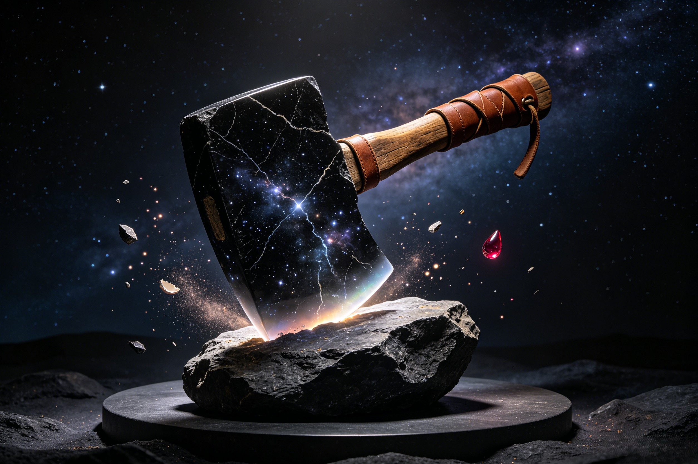

The First Tool in the Universe
Before swords, before staves, before the Diamond Snare or the Nine-Tooth Rake — there was the axe of Pangu. The first weapon ever wielded, the blade that invented division, the tool that carved reality from nothing.
Where did the Cosmic Axe come from? No smith forged it — there were no smiths, no forges, no fire, no metal. No god created it — Pangu was the first being, with no celestial predecessor to craft him a weapon. The most ancient tradition holds that the axe materialized from the cosmic energy of the egg itself, condensing beside Pangu during his 18,000-year gestation. It is literally made of primordial chaos — the same substance as Hundun, but crystallized into form. This is the deepest paradox of the axe: it is chaos-turned-against-itself, the only weapon capable of dividing chaos because it shares chaos's origin. The axe is enormous — scaled for a cosmic giant whose head touched the heavens and whose feet pressed the depths of the earth. Its blade is obsidian-black stone shot through with veins of starlight, each vein a record of the moment a star first ignited. The handle is wrapped in what the texts describe as "ancient wood" — a paradoxical material, since there were no trees when the axe appeared. Some traditions identify it as pure wood-element energy (mu), one of the Five Elements (wuxing) in its primordial, pre-material form. The blade's edge glows faintly with residual creation-light — the heat of the first division still radiating after eons. When Pangu first grasped the axe, his fingers fit into grooves that seemed to have been waiting for him, as though the weapon and the wielder had been designed for each other by the same cosmic force that produced the egg itself. In later Chinese mythology, Taishang Laojun would become the supreme divine smith, forging weapons in his Eight Trigrams Furnace for the gods of heaven — the Diamond Snare that captured Sun Wukong, the Nine-Tooth Rake of Zhu Bajie, the magical weapons of celestial generals. But his furnace was lit eons after the axe of Pangu first gleamed in the darkness of the egg. And Sun Wukong's Ruyi Jingu Bang — the magical iron staff that could shrink to a needle or grow to pierce the heavens — was also not conventionally forged: it was a pillar of the Eastern Ocean, a natural wonder shaped by cosmic forces. Both echo the axe's origin: the most powerful weapons are not made, but found, awakened, or born.
The Cosmic Axe is not merely a weapon — it is the first tool in the history of the universe. Before the axe, there was no concept of "tool." No object had ever been used by a conscious being to reshape reality. Pangu's axe stands at the dawn of technology itself — the archetype from which every hammer, every plow, every knife, every machine, every instrument of human civilization ultimately descends. This gives the axe a philosophical weight that no other divine weapon in Chinese mythology carries. When Pangu swung the axe, he was doing something that had never been done before: imposing intelligent will on formless matter through an intermediary object. This act — the use of a tool to divide and shape — is the dividing line between pure nature (Hundun) and artifice (the ordered world). In Chinese thought, this is not viewed with the ambivalence that Western mythology often attaches to technology (Prometheus stealing fire, the Tower of Babel). Rather, the axe is honored, not feared. It represents the necessary first step toward civilization — a civilization that would eventually produce writing, philosophy, medicine, and art. The axe is the parent of every craft. The carpenter's adze, the mason's chisel, the farmer's hoe — all are distant descendants of Pangu's cosmic blade. This theme of primordial tools resonates through Chinese myth. Nüwa's five-colored stones are tools of repair, used to patch the sky after Gonggong shattered the Buzhou Mountain pillar. They are not weapons but instruments of restoration, just as the axe is an instrument of creation. And when Erlang Shen wields his divine blade in battle, or Zhu Bajie swings his Nine-Tooth Rake (forged by Taishang Laojun himself), they are participating in a lineage of tool-use that began when the first being picked up the first object and decided that reality needed to be changed. The Cosmic Axe is the ancestor of every weapon, every tool, every instrument that has ever existed. It is the original act of human—and pre-human—ingenuity.
The Cosmic Axe's powers transcend anything that later divine weapons can achieve, because the axe does not operate on the level of physics — it operates on the level of metaphysics. Its edge does not merely cut matter; it cuts concepts. When Pangu swung the axe, its blade did not physically hack through a solid object — there was no solid object yet. What the blade did was separate: light from darkness, yang from yin, sky from earth, order from chaos. The axe is the tool of division itself — the living embodiment of the Chinese character fen (分), which appears throughout the Pangu creation myth and means "to divide, to separate, to distinguish." This is the axe's essential power: it creates distinction where before there was only undifferentiated unity. The blade edge glows with what the ai-image-prompts describe as "residual creation-light" — the heat of the first division, still radiating, still warm, as if the moment of creation happened only moments ago. Its obsidian translucency contains trapped starlight from the moment the first stars formed, each vein of light a frozen record of cosmic history. The handle, wrapped in "ancient wood" that predates the existence of trees, is a paradox made material — a thing that should not exist, yet does, because the axe transcends the normal categories of existence. If a mortal were to touch the axe, they would be instantly unmade. The axe is not calibrated for mortal hands — it is a cosmic-scale instrument, designed for a being who stood between heaven and earth. Its power is absolute within its domain: it divides. To touch it is to risk being divided from existence itself. Compare this to other divine weapons of Chinese mythology. Sun Wukong's Ruyi Jingu Bang can change size at will, shrink to the size of a needle, or grow to pierce the heavens. Erlang Shen's three-pointed double-edged blade can cut through any armor and transform at will. Nezha's Universe Ring and Armillary Sash are among heaven's most versatile weapons. But none of these weapons can do what the Cosmic Axe does: cut through reality itself. The axe divides being from non-being. Everything else fights within reality; the axe creates the arena where all later battles are fought. And like Nüwa's five-colored stones, which have the cosmic property of patching the sky itself — a power that no earthly material could replicate — the axe's properties are unique, non-replicable, and tied to the moment of creation. Guanyin's vase of pure water contains the essence of compassion and the power of salvation, a cosmic principle in liquid form. The axe is the same: a cosmic principle made solid, the principle of division given blade and handle.
What happened to the Cosmic Axe after Pangu died? The myth is conspicuously silent on this point — a silence that has fueled centuries of theological debate and creative speculation among Chinese scholars, priests, and storytellers. No canonical text records the axe's fate after Pangu's body transformed into the world. It simply vanishes from the story, leaving behind a vacuum that later traditions have rushed to fill. Several major theories have emerged. First: the axe dissolved back into the cosmic energy from which it came, its work complete. Just as Pangu's body transformed into the physical world, the axe — being made of the same primordial substance — may have simply returned to the formless, its purpose fulfilled once heaven and earth were permanently fixed. Second: the axe fell to earth and became a mountain range. Some Chinese traditions identify the Kunlun Mountains as the buried blade of Pangu's axe, its edge embedded in the earth, its handle reaching toward the heavens — a permanent monument to the act of division. Third: the axe remains hidden somewhere in the cosmos, waiting for a being worthy to wield it at the end of the current cosmic cycle, when chaos threatens to reassert itself and the work of division must be done again. Fourth: the axe shattered into fragments at Pangu's death, and those fragments became the first ore deposits in the earth — which would explain why iron and jade are found in mountains (Pangu's bones), as though the axe's pieces buried themselves in the body they had helped shape. Fifth: in some Taoist traditions, the axe was retrieved by Taishang Laojun after Pangu's death and used as raw material for the forging of other divine weapons — which would mean that every heavenly weapon carries a fragment of the original axe within it. This ambiguity is itself meaningful. The axe's power was so absolute, so tied to the unique moment of creation, that no subsequent myth could imagine anyone else wielding it. It exists in the mythic imagination as the weapon that cannot be surpassed. Nezha's Universe Ring, Armillary Sash, and Fire-Tipped Spear are among heaven's greatest weapons — but none approaches the axe. The Jade Emperor rules the order the axe created, but he could never wield it himself; his authority is administrative, not creative. In modern Chinese fantasy — video games like Age of Mythology: Retold, web novels, manhua, and role-playing games — "Pangu's Axe" frequently appears as the ultimate artifact, the object of quests that span worlds and lifetimes. The mythic silence has become a narrative gift: the axe is wherever the story needs it to be, doing whatever the story requires, as long as that requirement involves the power that existed before everything else.
The axe was not "made" conventionally. It materialized from the cosmic energy of the primordial egg itself, condensing beside Pangu during his 18,000-year gestation. Its blade is obsidian-black stone with veins of starlight; its handle is wrapped in what texts call "ancient wood" — possibly pure wood-element energy (mu 木) from before material form existed. It shares its substance with Hundun (chaos) but crystallized into ordered form — literally chaos turned against itself.
It is arguably the most powerful weapon in Chinese mythology. While Sun Wukong's Ruyi Jingu Bang can change size and Erlang Shen's blade can cut any armor, the Cosmic Axe could cut concepts — dividing light from darkness, yang from yin, heaven from earth. It was a tool of cosmic-scale creation, not combat. No other weapon in the pantheon operates on this level, because no other weapon was present at the moment of creation itself.
The myth does not specify, and traditions vary widely: it dissolved back into cosmic energy; it became the Kunlun Mountains; it shattered into the first ore deposits; or it was retrieved by Taishang Laojun and used as raw material for other divine weapons. The ambiguity has made it a popular MacGuffin in modern Chinese fantasy — video games, web novels, and manhua frequently feature quests to find "Pangu's Axe" as the ultimate artifact.
Dive Deeper